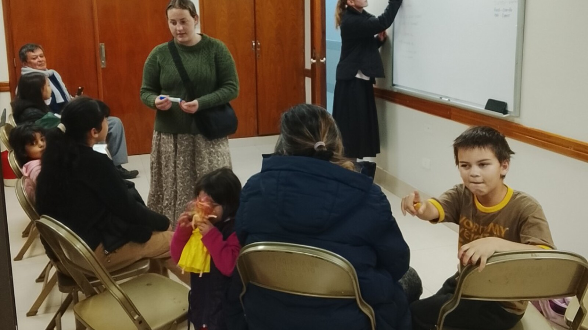

What Is a Day Program for Adults With Autism?
A day program can provide structure, support, activities, relationships, and community access after school ends. The quality depends less on the label and more on what each person is actually supported to do.

What happens during the day after an autistic young adult leaves school?
For many families, that question arrives with frightening speed.
School provided a place to go, familiar people, transportation in some communities, a schedule, and at least some expectation that the student would be engaged. Then eligibility ends. The family may suddenly be responsible for assembling the entire week.
An adult day program is one possible part of the answer.
In plain language, a day program is a service an adult attends during daytime hours without living there. Depending on the provider and the person's needs, it may offer recreation, life-skills support, community outings, volunteering, employment preparation, personal care, communication support, therapies, or simply a safe and predictable place to spend part of the week.
But the phrase day program covers very different realities. One program may help people choose individual activities throughout the community. Another may keep a large group in one building completing the same schedule. Families have to look beyond the name.
What do adults do in a day program?
There is no universal schedule. A program might include:
- art, music, games, movement, or sensory activities;
- cooking, shopping, laundry, money practice, or other daily-living skills;
- supported communication and opportunities to make choices;
- exercise, walks, swimming, gardening, or outdoor time;
- libraries, parks, restaurants, stores, museums, worship, or community events;
- volunteering or supported employment activities;
- friendship, social groups, and time with familiar staff;
- personal care, medication assistance, meals, and health support;
- quiet rooms, rest, and regulation breaks.
That list can sound impressive. It does not tell you whether a specific participant has a good life there.
The important questions are more personal:
- Does this adult enjoy the activities?
- Can they decline or stop?
- Are they supported to communicate?
- Do staff know what interest, distress, boredom, and refusal look like for them?
- Does the week include real community life, not merely transportation between disability-service buildings?
A full calendar is not automatically a meaningful day.
Different adults may need different kinds of day support
Some autistic adults want help finding paid work. Others want classes, volunteering, friendships, exercise, or creative activities. Some need extensive assistance with toileting, eating, medication, mobility, regulation, or safety. Some can navigate the community with periodic support. Others need one-to-one supervision.
A person with high support needs should not be excluded from meaningful daytime life because participation requires more staff time.
At the same time, a day program should not be treated as the automatic destination for every disabled adult. Some people prefer supported employment, college, individualized community services, home-based routines, or a mixture of several options.
The right question is not, "Which program accepts this diagnosis?"
What kind of day helps this particular person feel safe, interested, connected, and respected?
Person-centered should describe daily practice
Person-centered planning is now a central standard in U.S. home- and community-based services. The Centers for Medicare & Medicaid Services says adult day settings should learn what each person wants from community engagement, record those preferences in the person's plan, and identify the transportation and support needed to make participation possible.
That principle travels well beyond one country's funding system.
A program is not person-centered merely because the phrase appears in its brochure. It should be visible in ordinary decisions.
One participant goes to the market while another stays to paint.
Someone who dislikes groups gets a quieter option.
A nonspeaking adult's behavior is treated as communication.
A preferred faith community, café, walking route, or club is considered part of community life.
Schedules change when interests or support needs change.
A systematic review of person-centered planning for people with intellectual disabilities found low-quality but encouraging evidence of moderate benefits in community participation, activity participation, and everyday choice. The researchers also found inconsistent results in other areas, including employment. That is a useful caution: person-centered planning is not magic, but it can change what services pay attention to.
Community presence is not the same as community inclusion
A van can take ten disabled adults to a shopping center without any of them choosing the destination, speaking with anyone outside the group, or doing something personally meaningful.
Technically, they were in the community.
That is different from belonging to it.
Meaningful community participation might involve becoming known at the same bakery, attending a congregation the person values, choosing groceries for a favorite meal, volunteering in a role that fits, or returning regularly to a park where the person feels comfortable.
CMS guidance specifically names faith communities, clubs, restaurants, volunteering, and work as examples of individual community preferences that services may support. The point is not to complete a quota of outings. The point is to build an actual life.
A good program must make room for rest and refusal
Day programs can accidentally recreate school for adults.
Everyone follows the same timetable. Activities are presented as requirements. Participation is praised; opting out is treated as behavior. Quiet time exists only after someone becomes overwhelmed.
Adults should not have to perform constant productivity to justify receiving support.
For some people, three activities in one day are energizing. For someone else, one community outing followed by a long regulation break is a full and successful day.
Refusal also matters. A person may communicate no through speech, AAC, gestures, turning away, dropping to the floor, pushing materials aside, becoming agitated, or simply disengaging. Staff need to distinguish between a meaningful refusal, a need for adaptation, and a health or safety task that cannot be abandoned.
Watch how staff talk about participants
The culture of a program often appears in ordinary language.
Do staff know participants as people, or mainly as diagnoses and behaviors?
Do they speak respectfully when participants are present?
Can they describe what each person enjoys?
Can they explain how a nonspeaking participant makes choices?
Do they talk about difficult days with curiosity and care, or with annoyance?
Staffing ratios matter, especially when someone has medical, behavioral, mobility, or elopement risks. Temperament, training, continuity, supervision, and knowledge of the individual matter too.
Transportation can decide whether a program is usable
A wonderful program is not a practical option if the family cannot get the adult there.
Ask whether transportation is provided, how long the route takes, who supervises riders, how wheelchairs and safety equipment are handled, what happens after a medical or behavioral incident, and whether families must be available for immediate pickup.
Also ask whether transportation is available for individualized outings. A program may promise community participation but lack enough vehicles or staff to provide it consistently.
Red flags families should notice
- Everyone follows the same schedule regardless of preference.
- Most activities happen in one segregated building.
- Adults are spoken to like young children.
- Staff cannot explain how nonspeaking participants make choices.
- Refusal is routinely described as noncompliance.
- There is no private place for personal care or regulation.
- Families receive little information beyond attendance.
- Community outings are rare, canceled frequently, or selected entirely for staff convenience.
- Participants appear idle for long stretches without choosing rest.
- The program emphasizes safety but cannot explain how it protects dignity and freedom.
No program will be perfect every day. The issue is whether the organization notices problems, listens, documents what happened, and improves.
What you can do this week
Write a one-page description of a good day
Describe preferred waking time, food, movement, communication, social contact, quiet time, community activities, sensory needs, and signs of fatigue. Do not begin with available programs. Begin with the person.
List the support hidden inside current activities
Choose three things the person enjoys and record what makes them possible: transportation, preparation, supervision, communication help, money, equipment, or a familiar companion.
Call one provider and ask for a real schedule
Ask what happened yesterday, not what appears in the brochure. How many participants left the building? What choices were offered? How much time was spent waiting?
Document how the person says no
Write down the movements, sounds, words, gestures, or behavior that indicate refusal, discomfort, or a need to stop.
Check transportation before falling in love with a program
Calculate the door-to-door time, cost, supervision, pickup requirements, and backup plan.
Long-term questions to consider
- What will replace the structure and relationships school currently provides?
- Does this adult prefer a busy week, a quiet week, or a mixture?
- Which activities are genuinely chosen?
- How will changing medical, mobility, sensory, or behavioral needs be supported?
- What staffing level is required for safe participation?
- Can the person remain in the program if support needs increase?
- How will family knowledge transfer to new staff?
- What relationships exist beyond paid caregivers?
- How will the person maintain contact with a preferred faith community, club, neighborhood, or familiar business?
- What happens when the program closes for holidays, weather, staffing shortages, or emergencies?
- How will the family know whether the person is engaged, distressed, bored, or content?
Casa de SAM's position: daytime support should expand a life
Sam is still a child. The photograph on this page shows him at an English class held at our church here in Paraguay, not at an adult day program.
But it helps me see the ingredients I hope remain available to him as an adult.
There is somewhere familiar to go.
People expect him.
An activity is happening, but he is not required to participate exactly like everyone else.
He can move, observe, join, step back, and still remain part of the room.
Casa de SAM is a lifelong-home vision, not primarily a day program. Its residents may still benefit from daytime services, supported community activities, work when genuinely desired, recreation, worship, volunteering, classes, or time in future Casa de SAM spaces.
What I do not want is an adulthood organized around keeping people occupied until dinner.
The schedule should serve the person.
The person should never exist to fill the schedule.
A good day program does more than provide somewhere to go. It helps an adult have somewhere to belong, something worth doing, and enough support to participate as themselves.
Sources and further reading
- Centers for Medicare & Medicaid Services: Home- and Community-Based Services overview.
- CMS: Home- and Community-Based Services Final Regulation.
- CMS guidance on how residential and adult day settings can promote community integration.
- CMS guidance on person-centered planning in residential and adult day settings.
- Ratti V, et al. The effectiveness of person-centred planning for people with intellectual disabilities: a systematic review. Research in Developmental Disabilities. 2016.
About Casa de SAM
Casa de SAM is a developing vision for a lifelong residential community in Paraguay for adults with autism and other developmental disabilities who need substantial daily support. The project is being designed around safety, dignity, familiar relationships, flexible daily rhythms, and belonging that does not depend on productivity or independence.
Casa de SAM is not yet an operating nonprofit, residential provider, or day-program provider. We are currently researching, documenting the vision, and looking for people who may eventually help build it responsibly.
This article provides general educational information. It is not individualized medical, therapeutic, legal, educational, benefits, or placement advice. Program definitions, funding, regulation, and availability vary by country and location.